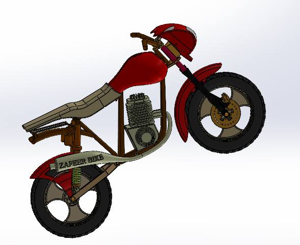
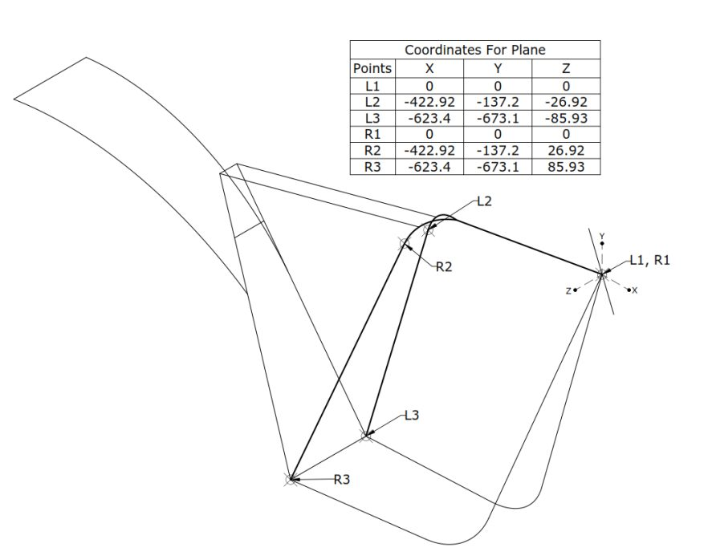
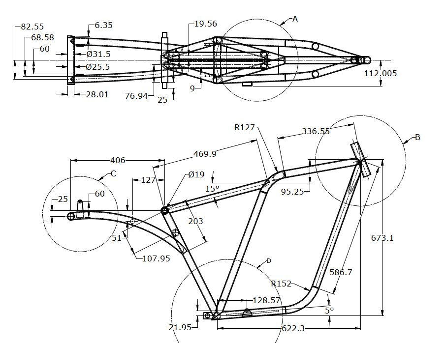
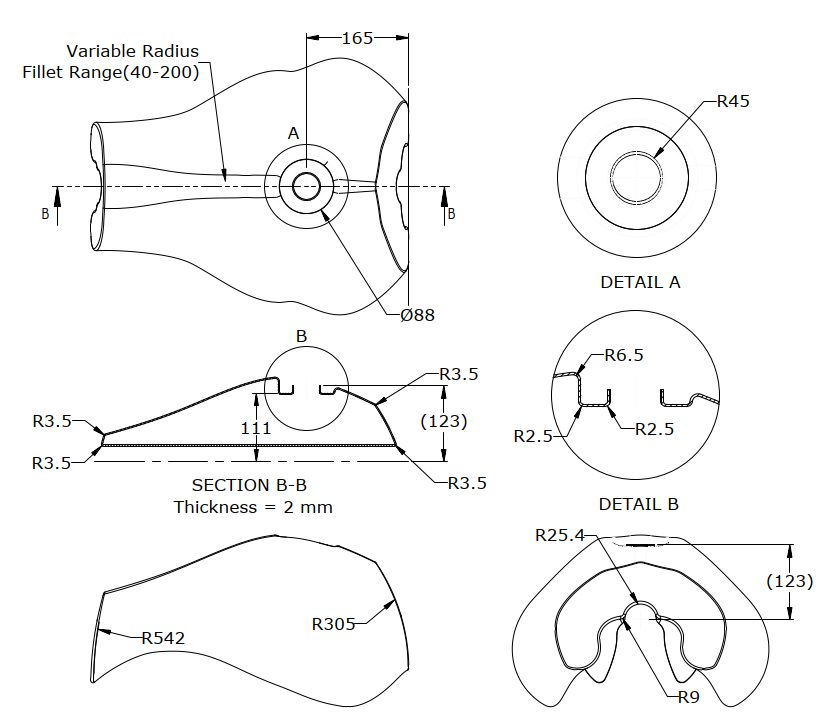
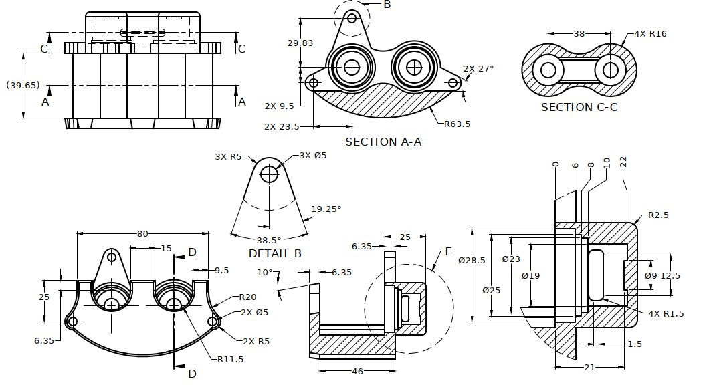
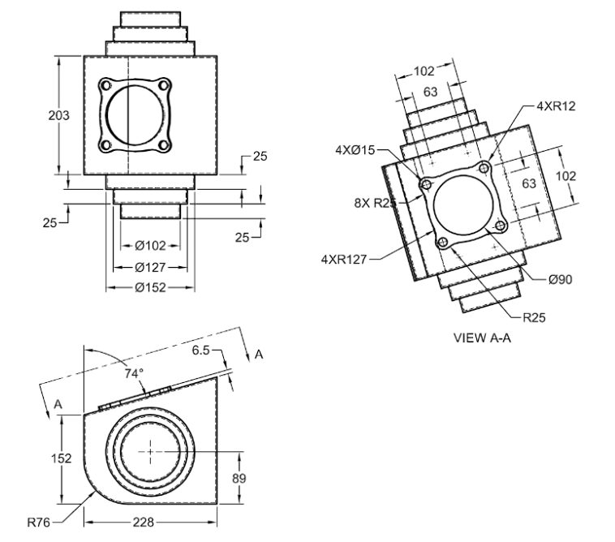
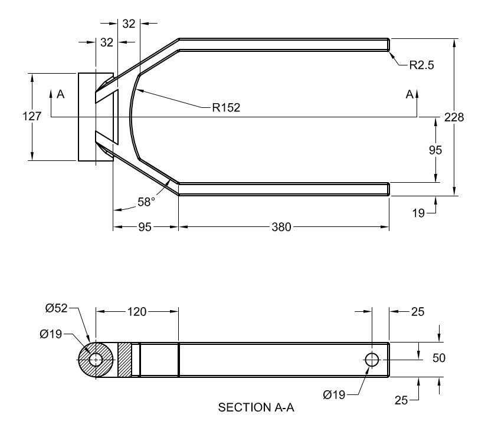
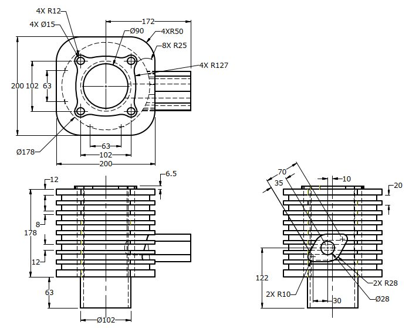
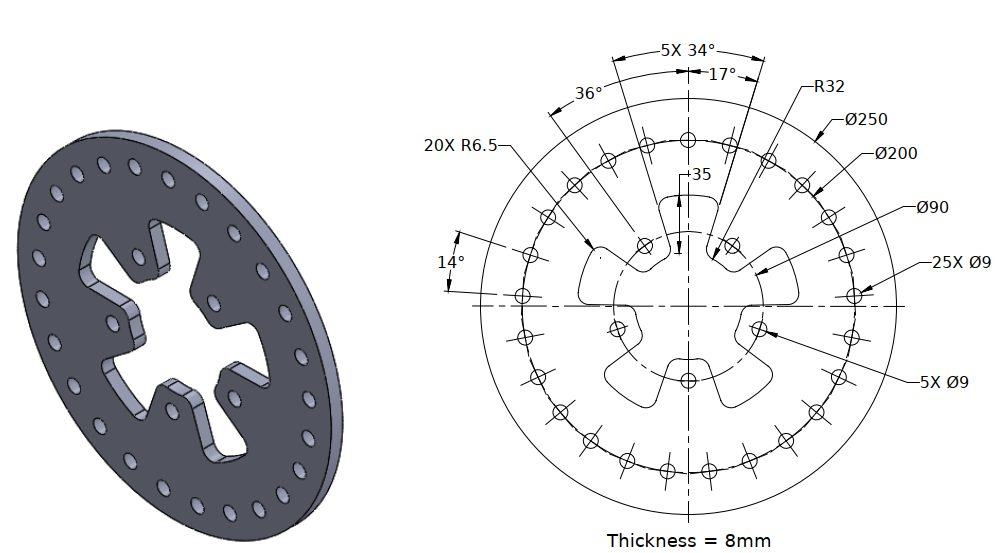

01 / MECHANICAL DESIGN
Motorcycle assembly
Thirty components. One complete assembly. Designed part by part, documented drawing by drawing.
A complete motorcycle modelled part by part over three weeks: 30 unique components, three subassemblies and one top-level assembly. The build exercised the parts of SolidWorks that production work actually depends on: weldment structural members for the frame, surfacing for the fuel tank as a 2 mm thin-wall body, and cast-part detailing on the crank case cover with a 74° draft and a four-bolt circle on a 102 mm square pattern.
I then produced all 30 manufacturing drawings myself from my own models, with section and detail views, specifying tube geometry, draft angles, bolt patterns and stepped bore dimensions.










